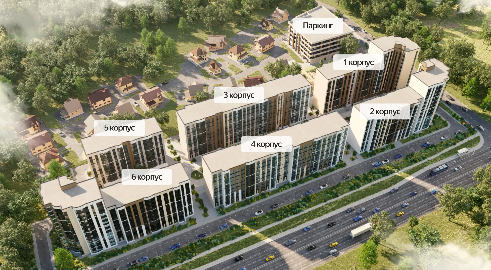

ВАШ ДОМ. В ОДНО КАСАНИЕ.
Добро пожаловать
домой.
Выберите калитку на карте
и позвоните, чтобы открыть.
Карта территории
6 калиток
ПЕСЧАНЫЙ • ПЛАН ТЕРРИТОРИИ
ВАШ ДОМ. В ОДНО КАСАНИЕ.
Выберите калитку на карте
и позвоните, чтобы открыть.
